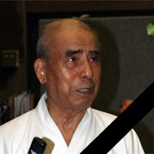

Клуб «Кенcинкан» Сибирская федерация Кендо, Иайдо, Дзедо
Занятия японскими боевыми искусствами Иайдо и Дзедо в Новосибирске
Опыт обучения мирового класса
«Сибирская Федерация Кендо, Иайдо, Дзёдо» основана в 1996 году.
В структуру Федерации входят отделения в Новосибирске, Барнауле, Красноярске, Омске, Томске и Кемерово.
С 2000 года «Сибирская Федерация Кендо, Иайдо, Дзёдо» официально курируется Федерацией Кендо острова Хоккайдо (Япония).
Федерацией периодически проводится «Кубок Сибири» - соревнования по иайдо и дзёдо.
В Новосибирске периодически проводятся семинары по иайдо и дзедо под руководством сенсеев из города Саппоро, побратима Новосибирска.
Участники клуба ежегодно ездят на практические семинары в Японию.
ДЗЁДО
Дзёдо - это искусство фехтования деревянной палкой - "дзё".
Дзёдо не ставит во главу угла атаку, а считает необходимым действовать в зависимости от атаки противника, контролируя ситуацию.
Его ведущий моральный принцип: «Не нанося ран противнику, проучить его и предостеречь».
ИАЙДО
Иайдо - традиционное японское искусство владения двуручным мечом - "катаной".
Задача практикующего иайдо - научиться мгновенно выхватывать меч из ножен и результативно атаковать.
Схватка сводится к нескольким эффективным ударам, после чего меч возвращается в ножны.
В первые годы для обучения иайдо используется не заточенная катана из мягкого металла - "могито" и деревянная имитация меча "бокуто"
КЕНДО
Японское воинское искусство, основанное на приемах с двуручным самурайским мечом.
Зародилось в Х-ХI веках в Японии.
Современное кендо - это тренировки и поединки, в которых используется бамбуковая имитация двуручного самурайского меча - синай.
Занятия проходят каждую неделю в Новосибирске и Академгородке.
Выбирай подходящую группу и приходи на первое занятие.
Первое занятие бесплатное.
Расписание
Инструкторы
Игорь Федорич
Директор «Сибирской Федерации Кендо, Иайдо, Дзёдо»,
представитель технической комиссии РФК по иайдо и дзёдо в Сибирском регионе,
5 дан иайдо,
5 дан дзедо
Ирина Шкурина
Инструктор иайдо, 4 дан иайдо
Николай Мордвин
Инструктор иайдо, 3 дан иайдо, 2 дан дзёдо
Максим Михайлов
Инструктор иайдо, 3 дан иайдо
Наши японские сенсеи

Окуда сенсей
8 дан иайдо, ханси, город Саппоро, Япония
Кавамура сенсей
8 дан иайдо, кёси, город Саппоро, Япония
Ёкота сенсей
8 дан иайдо, кёси, 7 дан дзёдо кёси, город Саппоро, Япония